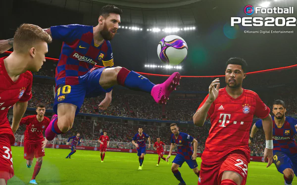
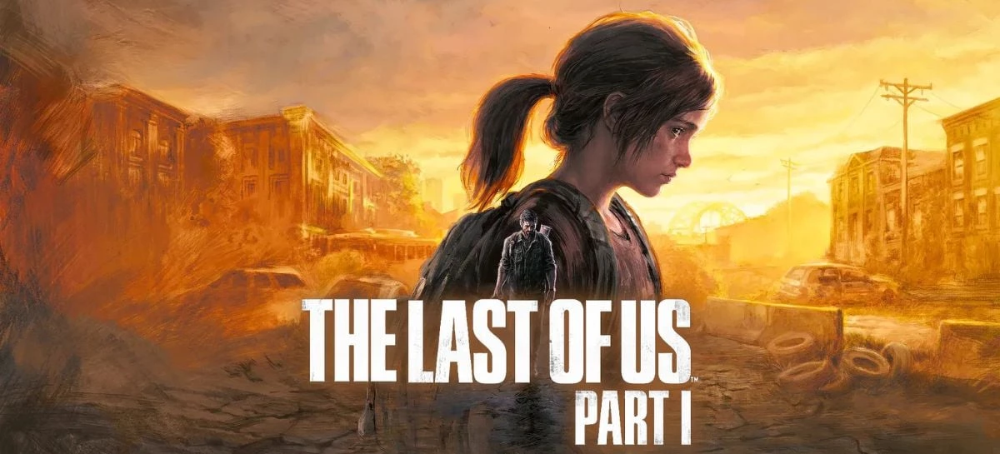
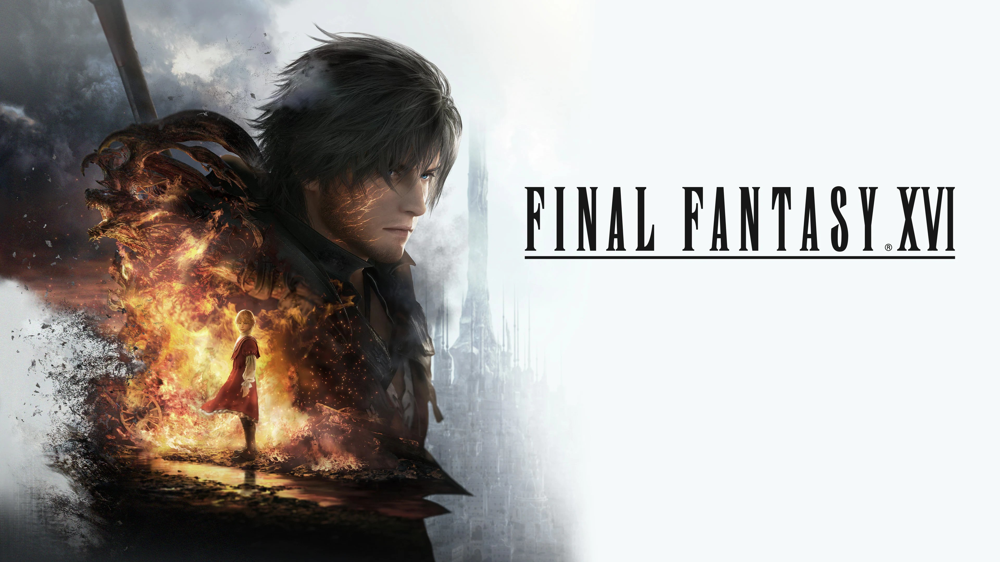
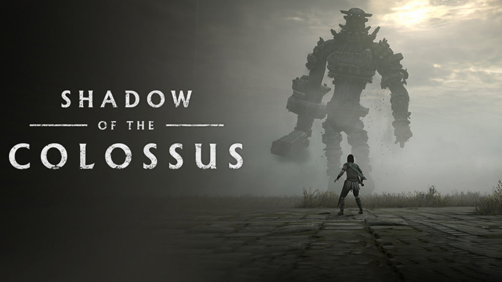
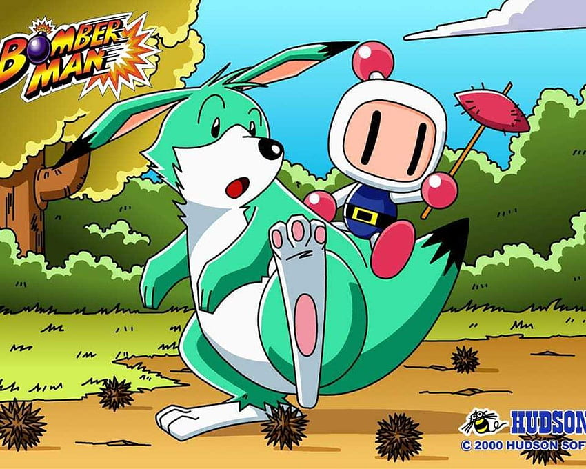
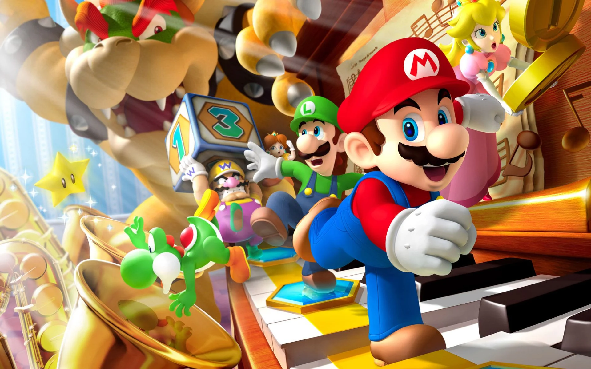

Grand Theft Auto: San Andreas

Grand Theft Auto: San Andreas é um jogo eletrônico de ação-aventura desenvolvido pela Rockstar North e publicado pela Rockstar Games. É o quinto título principal da série Grand Theft Auto e foi lançado em outubro de 2004 para PlayStation 2 e em junho de 2005 para Xbox e Microsoft Windows.
PES
eFootball é uma série de jogos eletrônicos de simulação de futebol desenvolvido e publicado pela Konami desde 1995. Consiste em dezoito jogos principais e vários spin-offs que foram lançados em diversas plataformas diferentes. A série alcançou sucesso crítico e comercial.
God of War

Esta impressionante repaginação de God of War reúne todas as características marcantes dessa famosa franquia — combate brutal, lutas épicas contra chefes e uma grandiosidade de tirar o fôlego — e as mescla a uma narrativa poderosa e emocionante que reestabelece o mundo de Kratos.
The Last of Us
Em uma civilização devastada, em que infectados e sobreviventes veteranos estão à solta, Joel, um protagonista abatido, é contratado para tirar uma garota de 14 anos, Ellie, de uma zona de quarentena militar. No entanto, o que começa como um pequeno serviço se transforma em uma jornada brutal através do país.
Breath of the Wild

Entre em um mundo de descobertas, exploração e aventura em The Legend of Zelda: Breath of the Wild, o novo jogo da famosa série que veio para romper barreiras. Viaje pelos vastos campos, florestas e montanhas enquanto descobre o que aconteceu com o reino de Hyrule nesta deslumbrante aventura a céu aberto.
Hi-fi: Rush

Sinta a batida enquanto o aspirante a estrela Chai e seu inesperado time de aliados lutam contra uma megacorporação maligna usando um estrondoso combate ritmado! Da Tango Gameworks, chega agora Hi-Fi RUSH, um novo jogo de ação em que o mundo entra em sincronia com a música!
Final Fantasy XVI
Final Fantasy XVI combina elementos de RPG de ação com um outro nível de sistema de combate, beleza e história dignos de um verdadeiro Final Fantasy de nova geração.
Shadow of the Colossus
Shadow of the colossus é uma jornada espetacular por terras antigas em busca de feras gigantes. Armado com uma espada e um arco, ambientando em um dos mundos mais vazios, porém mais completo da história dos jogos.
Bomberman
Bomberman é uma série de jogos de estratégia, inicialmente desenvolvido pela fabricante Hudson Soft. O jogo original foi lançado em 1983 e novos jogos da série ainda continuam a ser lançados. Hoje, Bomberman estrela em mais de 60 jogos diferentes.
Mario
Super Mario é uma série de jogos eletrônicos de plataforma, criada pela Nintendo, baseada e estrelada pelo encanador fictício Mario. Alternativamente chamada de série Super Mario Bros. ou simplesmente série Mario, é a série central da ampla franquia Mario.